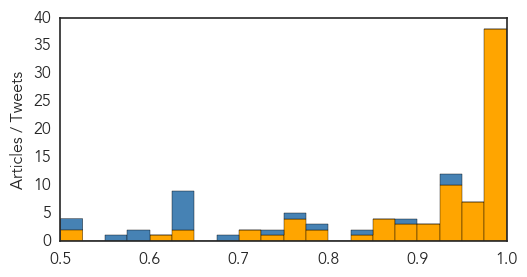

Ebola
30-Day Web Trend
1 alerts, 0 warnings

30-Day Twitter Trend
0 alerts, 0 warnings

Article Locations

Article Confidences
Top Articles:
- 1.000
- Fighting Ebola from day one
- 1.000
- Ebola is losing it strength in West Africa
- 1.000
- Tide turning in Ebola fight after hard lessons Republican American
- 1.000
- Scientists Ask If Ebola Immunizes As Well As Kills
- 1.000
- Scientists ask if Ebola immunizes as well as kills
- 1.000
- Critical-Care Physician From Canada Fought Ebola From Day One
- 1.000
- Are we starting to see the end of Ebola? Not quite, but we're well on our way
- 1.000
- Scientists ask if Ebola immunises as well as kills
- 1.000
- Is Ebola silently immunising some while killing their neighbours?
- 1.000
- Ebola – is the virus silently immunising as well as brutally killing?
- 0.999
- Liberia's Ebola Prospects: What it Takes to Get to Zero?
- 0.999
- Interview with Dr Rob Fowler
- 0.999
- Scientists ask if Ebola immunises as well as kills
- 0.998
- Has the Ebola Pandemic Been Contained? The Number of Ebola Virus Disease (EVD) Cases in Rapid Decline
- 0.998
- Ebola response: Is the world too late?
- 0.998
- Oxfam calls for Ebola recovery 'Marshall Plan'
- 0.998
- Dramatic decline in Ebola cases reported; West African countries remain 'cautiously optimistic'
- 0.997
- Doctor working in Ebola-hit Liberia says situation is 'improving significantly'
- 0.996
- Case Western researchers awarded NSF grant to develop new method to reduce risk of Ebola virus
- 0.996
- CWRU researcher on the clock to improve early Ebola detection
- 0.995
- Liberia closes centre at epicentre of Ebola outbreak - Africa
- 0.995
- Liberia closes Ebola center at epicenter of outbreak
- 0.994
- After Ebola, WHO to set up contingency fund, develop 'surge capacity'
- 0.994
- Ebola treatment center in Richardson to be dismantled
- 0.994
- Liberia closes Ebola treatment center
- 0.986
- China trains health professional in Ebola control
- 0.986
- Davos: UN launches $1 billion appeal for global Ebola response
- 0.982
- Chinese Women Contribute Greatly to Fight Against Ebola
- 0.980
- After Ebola, World Bank Chief Proposes Global Insurance Program For Future Outbreaks
- 0.980
- Three Dundalk businesses honored by comptroller
- 0.980
- Greater Baltimore Cultural Alliance places its first class of fellows
- 0.980
- New England slammed by 'crippling' storm
- 0.980
- European organic food and beverages market: France hosts world’s largest organic wine show
- 0.980
- Northeast snow disrupts travel plans at BWI
- 0.980
- Consumer advocates call for cheaper auto insurance for low-income residents in Maryland
- 0.980
- Bigger Baltimore boat show reflects rosy industry outlook
- 0.977
- China provides financial and technical support to Ebola control in Ghana
- 0.976
- What comes after Ebola?
- 0.975
- Oxfam calls for recovery Marshall Plan for Ebola victims
- 0.974
- WHO Executive Board appoints Dr Matshidiso Moeti as new Regional Director for Africa
- 0.974
- Liberia close to becoming Ebola-free
- 0.973
- WHO Executive Board appoints Dr Matshidiso Moeti as new Regional Director for Africa
- 0.968
- Guinea's Ebola Numbers May Be Higher Than Reported
- 0.965
- Fewer Ebola cases put potential vaccine at risk
- 0.962
- WHO adopts reforms to repair reputation after bungling Ebola
- 0.947
- Obama Pitches for Finding Ways to Detect Ebola Early
- 0.945
- MetroHealth and other Ebola-designated centers need federal money: editorial
- 0.945
- Additional support from Finland to combat Ebola in West Africa - Sierra Leone
- 0.945
- Sierra Leone News: HRS takes food distribution to Ebola-hit Western Rural « Awoko Newspaper
- 0.944
- Guinea Opposition Leader Says Slow Ebola Action Hurts Investment
Showing top 50 articles...
Top Tweets:
- 0.946
- CDC’s Team 5 scores a 10 fighting Ebola in Sierra Leone. Read more: http://t.co/dcaKoy8eN9 CDCinthefield
- 0.919
- SierraLeone. Pratiques funéraires et gestion des cimetières lors d'une épidémie de maladie à virus Ebola http://t.co/5jINV5b3Fn
- 0.918
- CDC’s first and only all-woman Ebola lab team in Sierra Leone set several new records. Read more:http://t.co/c3T6g1Qp8x
- 0.913
- Impact of the West African Ebola Virus Disease Outbreak on Foodsecurity http://t.co/VWNCoOXHu7
- 0.892
- RT: Ebola Epidemic Takes a Toll on Sierra Leone’s Surgeons http://t.co/Qq53Bgp84w
- 0.849
- Fighting the 'other' epidemic in SierraLeone http://t.co/0UW0DHWbVX distributes 1.8m antimalarials during ongoing Ebola outbreak
- 0.719
- Ebola death toll is slowing, but what next for blighted West African countries?... http://t.co/rFVCa71Fcp
- 0.656
- Braving Ebola: Portraits of the heroes and survivors at an Ebola treatment center in rural Liberia http://t.co/M1lWzA49Jq TackleEbola
- 0.634
- Ebola is not the end of the world and it can be beaten: Nurse and Ebola survivor speaks to the http://t.co/aeX4v2jopv EbolaResponse
- 0.625
- Guinée. Impact de l'Ebola sur l'agriculture et la sécurité alimentaire http://t.co/74JHyT93iB
- 0.581
- Kenya @ Text ‘Stop Ebola’ to 7979 to donate 20 BOB to the war against Ebola. RT if you will. AfricaAgainstEbola 24AUsummit
- 0.550
- STOP EBOLA http://t.co/QXskFMu5S1
- 0.526
- Ebola control: effect of asymptomatic infection and acquired immunity http://t.co/GxkxX69L04
- 0.517
- RT: MT: Celebrating Dr. Shetty from, who has been a leader in the response to fight Ebola http…
- 0.512
- .@WHO says Ebola cases top 22,000. Death toll closing in on 8,800. These numbers were unthinkable this time last yr. http://t.co/PzgxBpicaz
Unknown
30-Day Web Trend
0 alerts, 0 warnings

30-Day Twitter Trend
3 alerts, 0 warnings

Article Locations

Article Confidences

Top Articles:
- 0.988
- Flu kills 8 Hong Kong patients in one day, as infection rate hits 5-year high
- 0.958
- Plague cases rise in Madagascar, fear of more epidemics: WHO
- 0.957
- Plague cases rise in Madagascar, fear of more epidemics - WHO
- 0.946
- North America Confirms First Case of Bird Flu in Woman After China Trip
- 0.945
- Disease that killed Lockhart lurks, remains unpreventable
- 0.925
- No more cases of Norovirus at Eliot
- 0.922
- Agency officials respond to STD outbreak
- 0.922
- Streptococcus: What it is and why chickenpox raises risk
- 0.920
- Canada resident tests positive for H7N9 avian flu virus
- 0.917
- Chicago Tribune
- 0.917
- Chicago Tribune
- 0.917
- Chicago Tribune
- 0.917
- Chicago Tribune
- 0.917
- Chicago Tribune
- 0.917
- Chicago Tribune
- 0.917
- Chicago Tribune
- 0.917
- Chicago Tribune
- 0.917
- Chicago Tribune
- 0.917
- Chicago Tribune
- 0.917
- Chicago Tribune
- 0.917
- Chicago Tribune
- 0.917
- Chicago Tribune
- 0.917
- Chicago Tribune
- 0.917
- Chicago Tribune
- 0.917
- Chicago Tribune
- 0.917
- Chicago Tribune
- 0.917
- Chicago Tribune
- 0.917
- Chicago Tribune
- 0.914
- KFD vaccination guidelines relaxed to tackle its spread more effectively
- 0.913
- Rabies Vaccine Fails in Rare Death
- 0.910
- The world windows to Thailand
- 0.897
- Chinese Military Hospital in Lockdown Over Suspected SARS Cases
- 0.866
- Yemen's Houthi fighters free presidential chief of staff -official
- 0.865
- Listeria ride on American apples Stop eating apples; it’s not worth the risk
- 0.862
- NewsDaily
- 0.862
- NewsDaily
- 0.862
- NewsDaily
- 0.854
- Aust woman acquitted of child abduction
- 0.849
- Ghana moves to ban Nigerian poultry over bird flu scare
- 0.825
- Visiting restrictions in place at mayo general hospital
- 0.796
- Cambridge Memorial Hospital declares enteric outbreak
- 0.726
- Dog disease in lions spread by multiple species
- 0.722
- UN agencies ramp up aid efforts to flood-hit Southern Africa countries
- 0.710
- Cumberland Infirmary cancels operations over norovirus outbreak
- 0.702
- Hospitals to have rankings>
- 0.693
- IS group video gives Japanese hostage 24 hours to live
- 0.693
- IS group 'dreams of fighting the West on the ground’
- 0.689
- Video: Russia bans Ukraine salt as 'unsanitary'
- 0.685
- French town of Lunel under spotlight after terrorism raid
- 0.681
- Plant High School: Possible TB exposure reported, 150 students may need testing
Showing top 50 articles...
Top Tweets:
- 0.817
- .@SureAmGrumpy If the flu viruses circulating are very different from the vaccine viruses, the flu vaccines won’t work as well. FIGHTFLU
- 0.694
- Vaccination prevented about 7.2 million flu illnesses last flu season. FightFlu GetAFluVax http://t.co/7opDbsmRgl
- 0.683
- .@Techtembo888 Flu is generally worse than a cold; symptoms like fever, body aches, extreme tiredness are more common w/ flu. FightFlu
- 0.666
- .@SureAmGrumpy Each year, experts select the strains to include in the flu vaccine months before the start of flu season. FIGHTFLU
- 0.591
- RT: Transmission of Corona-MERS virus from camels to humans is rare... - Study https://t.co/xOMuJB41af h/t Shiloh coronav…
- 0.560
- .@Techtembo888 No, the flu vaccine will not interfere with cholesterol meds. FightFlu
- 0.537
- RT: En pocos minutos anunciamos proyecto de colaboración UPR / AAA de gran beneficio para nuestros estudiantes. ¡Pendientes! @A…
- 0.533
- Remember:Flu is serious. If sick w/ flu, early treatment w/ antivirals could be the difference b/w life & death for high risk ppl FightFlu
- 0.532
- .@SureAmGrumpy About 64% of H3N2 viruses are antigenically drifted from the H3N2 virus component used in the 14-15 flu vaccine. FightFlu
- 0.518
- RT: Canada resident tests positive for H7N9 avian flu virus http://t.co/XDp5EPWQ1T